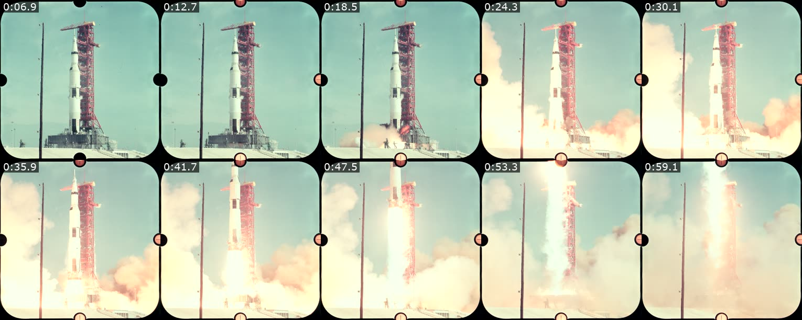

1 · Look
The agent sees your footage.
One image of timestamped frames, plus the length, loudness and silent stretches.
openmode look footage/launch.mp4

Video: 84.21s, 1812x1812, 24 fps, h264, 54.1 MBNo sound.
Open source · Free · Runs on your machine
Ask Claude Code, Codex or Cursor to cut, caption and render your video. openmode gives them the tools.
claude mcp add openmode -- npx -y openmode mcp
codex mcp add openmode -- npx -y openmode mcp
{
"mcpServers": {
"openmode": {
"command": "npx",
"args": ["-y", "openmode", "mcp"]
}
}
}
npx -y openmode init
Then ask: “Cut the silences out of interview.mp4, add captions, and make a vertical version.”
Needs Node.js 20 or newer and ffmpeg.
How it works
1 · Look
One image of timestamped frames, plus the length, loudness and silent stretches.
openmode look footage/launch.mp4

Video: 84.21s, 1812x1812, 24 fps, h264, 54.1 MBNo sound.
2 · Render
Clips, trims, speed, captions and music go in. An MP4 comes out, as a draft in seconds or a final at up to 4K.
apollo.json, shortened
{
"version": 1,
"format": "1:1",
"clips": [
{ "src": "footage/launch.mp4", "start": 20.2, "end": 54.4, "speed": 2 }
],
"captions": [
{ "start": 14.38, "end": 17.32, "text": "Liftoff. We have a liftoff." }
],
"endCard": "Cut by Claude with openmode.ai"
}
openmode render apollo.json --final
final: 35.2s, 1080x1080, 30 fps, 11.6 MB, with soundRendered in 4.61s (h264_videotoolbox)
3 · Versions
Save, compare and go back. It is undo for video.
openmode versions
v1 2026-11-13 17:49 first draft: countdown, liftoff, flag on the Moonv2 2026-11-13 17:50 liftoff lands on the word; ladder shot before the flag; quieter mixv3 2026-11-13 17:50 vertical version: ladder shot replaces the flag, which the 9:16 crop cut off
Six MCP tools
| look | See a video as one image, with its facts. |
|---|---|
| render_edit | Turn an edit file into an MP4. |
| render_frames | Turn numbered frames and sound into an MP4. |
| versions | Save, list, restore and compare. |
| edit_schema | The edit file format, with an example. |
| status | Check that ffmpeg is ready. |
Free and open source.
No account, no upload, no API key. MIT licence.
Questions
Look at a video, trim and join clips, change speed, add fades, captions, music and an end card, turn a folder of frames into a video, and render an MP4 at up to 4K. It also saves every version.
Any agent that can use MCP or run a command: Claude Code, Codex, Cursor and others.
Nothing. It runs on your own computer with your own ffmpeg, so there is no account, no upload and no API key.
Node.js 20 or newer and ffmpeg.
Star the repo, open an issue, or add an engine. CONTRIBUTING.md shows how. A Blender engine is on the roadmap.